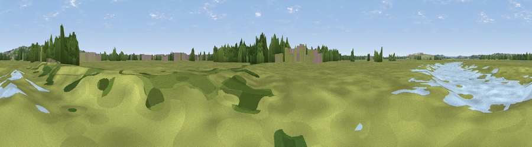

Viewpoint near Winter Gardens
#44173 in England · top 89% of its area beats it · near Winter GardensWhere it is
The exact computed spot (TQ 77680 84434). Click the marker for map links.
The view, rendered

A 360° render of this exact spot computed from the terrain model, tree cover and land cover — summer colours, afternoon light, calibrated against photographs of famous viewpoints. Real trees, hedges and buildings will differ in detail.
The panorama
Grey silhouette: terrain skyline in each direction (720 bearings, Earth curvature and refraction included). Dashed green: skyline with trees (+15 m) and buildings (+8 m) as obstacles. Blue strip: how far the ground is visible on each bearing.
Where the view opens
Wedge length = distance to the farthest visible ground on that bearing (vegetation-aware). Rings at 10, 25 and 50 km.
What fills the view
64% grassland · 21% woodland · 6% built-up · 5% water · 3% cropland ·
Angular shares of the visible panorama (visual magnitude), not map area. Landscape diversity 0.48 (0–1 Shannon).
Key numbers
More beautiful places nearby
The staircase of upgrades: each row has a higher view potential than everything closer. Driving times are estimates from straight-line distance, calibrated against real road routing — check an actual route before setting out.
| Place | Direction | Drive | Score |
|---|---|---|---|
| Viewpoint near Coryton | SW · 2 km | ~5 min | 29.4 |
| Viewpoint near South Benfleet | NNE · 2 km | ~5 min | 53.5 |
| Viewpoint near South Benfleet | NNE · 2 km | ~6 min | 62.9 |
| Viewpoint near Burham | SSW · 22 km | ~37 min | 63.1 |
| Bluebell Hill | S · 22 km | ~37 min | 64.8 |
| Viewpoint near Boxley | S · 24 km | ~40 min | 68.6 |
| Viewpoint near Shipbourne | SW · 37 km | ~56 min | 69.1 |
| Viewpoint near Westwell | SSE · 42 km | ~61 min | 72.2 |
51.53085, 0.56021 · source: osm viewpoint · position refined by local search. Computed location — check access rights before visiting.